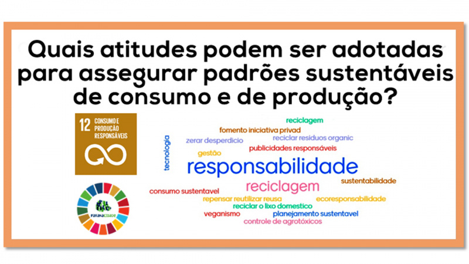

Contribuir para o ODS 12, que promove o consumo e a produção responsáveis, é crucial por diversas razões interligadas.
Primeiramente, o consumo e a produção responsáveis ajudam a reduzir o desperdício de recursos naturais e a poluição.
Quando as pessoas adotam práticas como reduzir, reutilizar e reciclar, diminuem a quantidade de resíduos gerados e o impacto ambiental
associado à produção e descarte de produtos. Isso também se traduz na preservação dos recursos naturais e na manutenção da saúde dos
ecossistemas.
Além disso, práticas sustentáveis têm um papel importante na mitigação das mudanças climáticas.
Reduzir o desperdício e escolher produtos com menor pegada de carbono pode diminuir as emissões de gases de efeito estufa.
Isso é essencial para controlar o aquecimento global e evitar impactos climáticos severos.
.

OS 17 Objetivos de Desenvolvimento Sustentável
Redução do Desperdício de Alimentos: Implementar práticas para reduzir o desperdício em todas as etapas da cadeia alimentar, desde a produção até o consumo final. Isso pode incluir campanhas de conscientização e sistemas de redistribuição de alimentos.
Eficiência dos Recursos: Promover a eficiência no uso dos recursos naturais, como água e energia, e adotar tecnologias que reduzam o impacto ambiental da produção e consumo.
Economia Circular: Incentivar o desenvolvimento de uma economia circular, onde produtos são projetados para durar mais, ser reparados e reciclados, minimizando assim o desperdício.
Educação e Conscientização: Aumentar a conscientização sobre os impactos ambientais das escolhas de consumo e promover práticas de consumo sustentável entre consumidores e empresas.
Inovação e Tecnologia Sustentável: Investir em pesquisa e desenvolvimento para criar tecnologias e processos mais sustentáveis que reduzam o impacto ambiental da produção e consumo.
Legislação e Políticas Públicas: Implementar e fortalecer leis e regulamentos que incentivem práticas de produção e consumo sustentáveis, como incentivos fiscais para empresas que adotam práticas verdes.
Certificações e Normas: Apoiar e promover certificações e normas que garantam práticas sustentáveis em produtos e processos, como certificações de comércio justo e selos ecológicos
Desenvolvimento de Produtos Sustentáveis: Incentivar a indústria a desenvolver produtos que sejam ambientalmente amigáveis e socialmente responsáveis, desde o design até a disposição final.
Transparência e Responsabilidade Corporativa: Fomentar a transparência nas práticas empresariais e a responsabilidade corporativa em relação aos impactos ambientais e sociais.
Redução do Uso de Plásticos: Diminuir a dependência de plásticos de uso único e promover alternativas mais sustentáveis e recicláveis.